English
EnglishM1s DOCK guides
Update history
| Date | Version | Author | Update content |
|---|---|---|---|
| 2023-05-09 | v0.5 | wonder |
|
| 2023-03-06 | v0.4 | wonder |
|
| 2022-12-20 | v0.3 | wonder |
|
Open the box
Here we open the box which contains M1S Dock with camera and screen.
Open the box, these things are shown:
- One USB cable
- One M1S Dock
- Two pin-headers
Hardware preparation
- Two TypeC Cables
- One M1s Dock
- One Computer
There are two TypeC Ports on M1s Dock. The UART TypeC Port is for serial communication between M1s Dock and computer. The OTG Port is designed for burning firmware of the C906 Core in BL808 chip, and you can change its function by programming it as if you want to learn USB protocol.

- We can see there are
S1_ButtonandS2_button, and there are alsoBOOTkey andRSTkey. - There is a
UARTon the left bottom, it's used for communication with two cores of BL808. - A
OTGport is on the tighe bottom, we use burn the C906 Core firmware of BL808 bia this port.
Power guide
First time boot
Board state
Power the M1s Dock，Click the RST (reset) key。
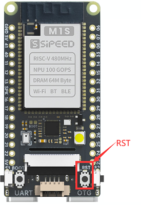
And it will be as follows：

- Click the ① key, the btn marked ④ turns green, and the number marked ⑥ increases, maximum number is 100.
- ② is the camera, and screen shows what the camera captures
- Click the ③ key, another btn on the screen turns green, and the number marked ⑥ decreases, minimum number is 100.
- ⑤ is the wifi test and its intensity.The user will not see this result as there is no this corresponding wifi test.
- ⑦ is the test of the onboard microphone, which is in the symmetrical position with the led on the back
The LED on the back blinks.

OTG PORT
A virtual removable disk with 3MB storage capacity is on your computer if you connect this board with your computer via TypeC OTG port on this board.
Because the driver is not compatible well with some computers, we can flash the firmware via UART to solve this problem.
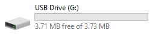
And there is USB Mass Storge Device in Windows device manager, in Linux there is also a removable device.

If there is no USB Mass Storge Device in Windows device manager, try to use other USB TypeC cable or connect with other USB port of computer, if this problem remains, read Burn-with-UART to flash M1s Dock to solve this problem. Make sure you have choose partition table, boot2, firmware these three files, after finishing burning, reconnect the board with computer.
UART PORT
Two serial devices will be shown in your computer if you connect this board with your computer by TypeC UART port on this board.
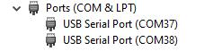
There are two Converter devices in Windows device manager.

If there is no serial device，try to use other USB TypeC cable or use other USB port of computer.
If this problem remains, visit Burn onboard bl702 to reburn the download debugger firmware. we set a BL702 on M1s Dock, and use it as USB to two uart convertor.
If there is only one serial device, visit Burn onboard bl702 to reflash the download debugger firmware
Set baudrate to 2000000，open the two serial ports, you will see different information.
Open the small serial port and you can see that the messages are being printed:

Open the big serial port for command-line interaction:

Burn firmware
To run our program on M1s Dock, we should know how to burn the firmware into M1s Dock first.
Burn via u-disk
To make it easier to burn firmware, we design u-disk burning method to burn the program for C906 core of BL808 in the chip.
Connect this board by its TypeC OTG port with computer, hold the 2 sides keys (which have been marked on the following figure) of M1s Dock, then press RST button to make this board into u-disk burn mode.
 |
Hold 2 side keys and press RST，make M1s Dock into u-disk burn mode |
Besides, when 2 side keys are being pressed, power on this board can make this board into u-disk burn mode too.
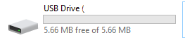A removable disk with tiny storage capacity will be shown on your computer if this board is in u-disk burn mode. Just drag the firmware Here are some demo bins into the removable disk to burn the firmware.

After succeed dragging the firmware bin into removable disk, the board will reboot and the u-disk is removed.
Because of the different bl702 firmwares, clicking the RST key to boot M1S Dock maybe necessary. Click me to see the differences between BL702 firmwares.
Burn via UART
The u-disk burning method above is used to burn firmware for C906 core of BL808. If we want to burn other firmware for other cores or when we need to upgrade the whole firmware of BL808, we need to burn M1s Dock via UART.
Connect this board by its TypeC UART port with computer, 2 serial ports will be shown on your computer (If your mouse doesn't work after connecting board with computer, please disconnect board with computer and visit Burn onboard bl702 to solve this problem).
Get the burn software
To burn for M1s, we need bouffalolab official burning application, visit https://dev.bouffalolab.com/download and download the file named Bouffalo Lab Dev Cube. Decompress the downloaded file then we get the application to burn the board.

Backup download: Sipeed Download Station
We mainly use BLDevCube, BLDevCube-macos and BLDevCube-ubuntu these three files, by which to burn our board with graphical interface on different OS.

And there are bflb_iot_tool、bflb_iot_tool-macos、bflb_iot_tool-ubuntu three applications, with which we can burn this board via command line.
Burn via graphical interface
Run the software based on your operating system, choose bl808, then we put this partition file in partition table (marked with ②) in IOT page.
 |
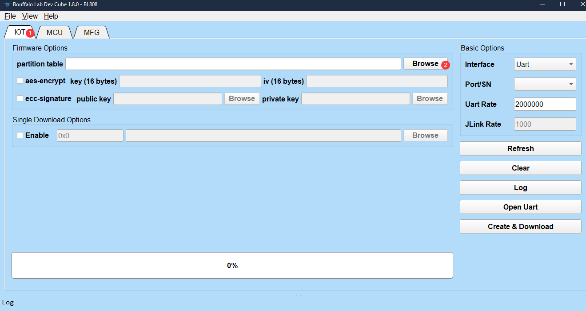 |
After selecting the partition file, we have more choice in this page. We just need boot2, firmware and d0fw these options.
In the picture above, boot2 stays the same, and it's in this directory: BLDevCube\chips\bl808\builtin_imgs\boot2_isp_bl808_xxxx_xxx, under where the path if this burning application is, and make sure your choosing file named with debug. firmware is the firmware file for E907 core, and d0fw is C906 core file, the previous Burn via u-disk operation can also burn firmware for this core.
The firmware file for E907 or C906 can be gotten by compiling M1s_dock example.
First time burning, both firmware and boot2 are needed, after this you just need tick what you want to burn not all.
The default old firmware can be downloaded here, and the newest firmware is not provided any more. Click me to see the old factory firmware details.
After choose the firmware, click the Refresh in the righr to refresh the serial port, then we can see 2 serial ports. If there are not 2 serial ports, visit Burn onboard bl702 to solve this. We choose the bigger number serial port, and set uart rate 2000000 .

Press BOOT key and RST key on the board, then release RST key first, then release BOOT key in order to make M1s Dock into UART burning mode.
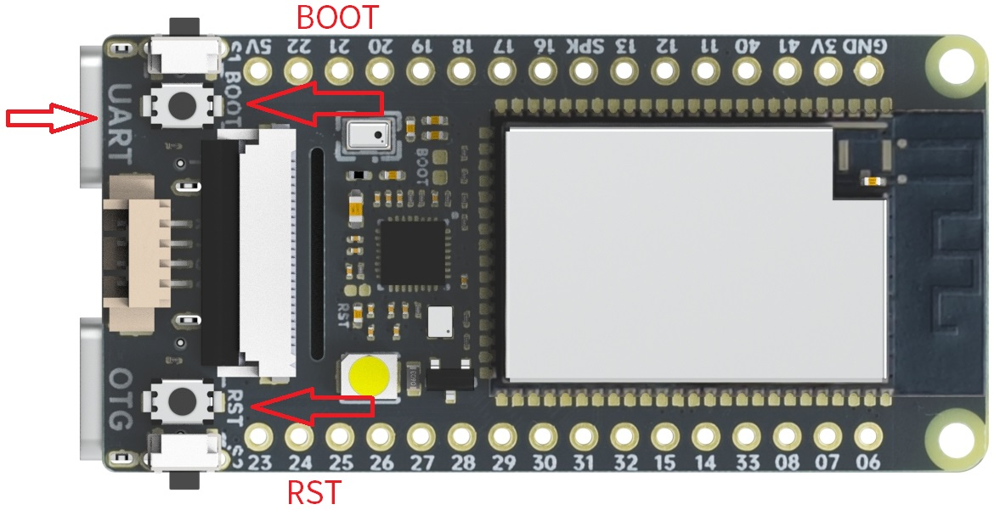Click Create & Download, then we can see the following message where the arrow points at, before this we should make M1s Dock into UART burning mode.

It will burn M1s Dock if it shows shake hand success

Reburn this if it SHAKEHAND FAIL. Try to release the keys in order (Release RST key first then release BOOT key, I mean when release RST key, the BOOT key is being pressed) to make the board into UART burning mode, otherwise the burning software will show error because of timeout burning.
Burn via command-line
We can burn M1s Dock by command-line through serial port on this board.
In BLDevCube folder, there is bflb_iot_tool application, bflb_iot_tool、 bflb_iot_tool-macos and bflb_iot_tool-ubuntu are used for different OS to burn the bouffalolab chip.
Here I take Windows command line as example to burn M1s Dock, and for other OS you need to change the commands by yourself.
.\bflb_iot_tool.exe --chipname=bl808 --port=COM38 --baudrate=2000000 --firmware="firmware_20221212.bin" --pt="M1s_BL808_example\partition\partition_cfg_16M_m1sdock.toml" --boot2="BLDevCube\chips\bl808\builtin_imgs\boot2_isp_bl808\boot2_isp_debug.bin"
In this command, firmware is the bin file for E907 Core, the default old bin file can be downloaded from here. pt is the partition file, it's in the M1s_BL808_example\partition folder, you can also Click me to get it.boot2 is in BLDevCube\chips\bl808\builtin_imgs\boot2_isp_bl808 folder, and is named with debug. Set baudrate 2000000 to burn this board fast. port is the bigger port number.
Of course, make sure you have made this board into UART burning mode: Press BOOT key and RST key, then release RST key first then release BOOT key.
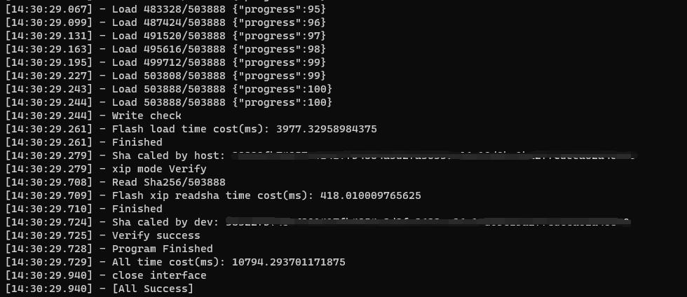
After burning these, you can burn the bin file for C906 core according to Burn via u-disk. You can also burn this board based on the address, from partition_cfg_16M_m1sdock.toml file you can know the burn address and modify it.
Troubles when burning
BFLB IMG LOAD SHAKEHAND FAIL
This means M1s Dock is not at the burning state. Make sure you have held the RST key and BOOT key together when M1s Dock is powered on, then release RST key first, and then release BOOT key. When release RST key, the BOOT key is being pressed to make the board into UART burning mode.
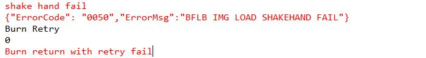
Make sure you choose the bigger COM port to burn M1s Dock, not the smaller COM port.

Only one COM port
This means you are in the bl702 burning mode. Make sure power on this board before pressing BOOT key.
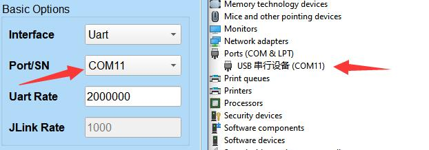
No COM port
Make sure you connected the computer and M1s Dock UART port, not that OTG port.
Burn single firmware
In the burning software, we need to tick and choose partition table, boot2, firmware, d0fw for the first time burning. If we want to burn only one firmware not all firmware, tick your target firmware and burn it.
firmware can be compiled out via e907_demo.
d0fw can be compiled out via c906_demo.
partition table and boot2 are needed to burn every time.
| Burn c906_demo firmware | Burn e907_demo firmware |
| 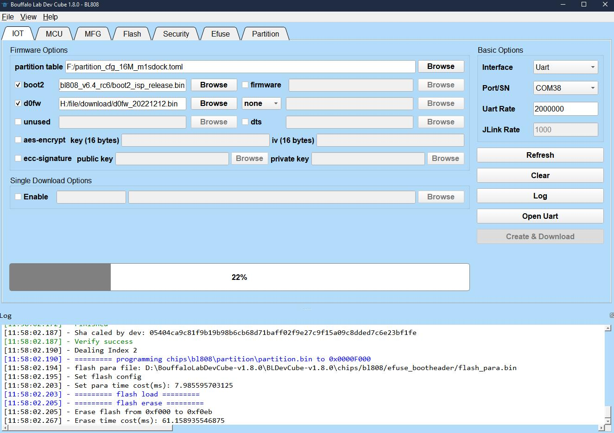 |  |
Burn examples
There are some demos compiled from M1s_BL808_example, with which you can have a test on M1s Dock.
lvgl_demo
LVGL (Light and Versatile Graphics Library) is a free open source graphics library suitable for mcu graphical interfaces.
Demo File: Click me
After burning into M1s Dock, the screen displays the lvgl test. And then sets the baudrate to 2000000, the serial port with the smaller serial port number prints the last touch screen position.


image_processing_demo
A simple image processing example.
Demo File: Click me
Burning into M1s Dock, screen displays what the camera captured, press the side key to change image operator. Set the baudrate to 2000000, to see the image operator state by the small serial port.
Click the RST key to reset the bl808, and we can see the information about the camera from the small serial port when the board boots, to know if there is some error with the camera.
 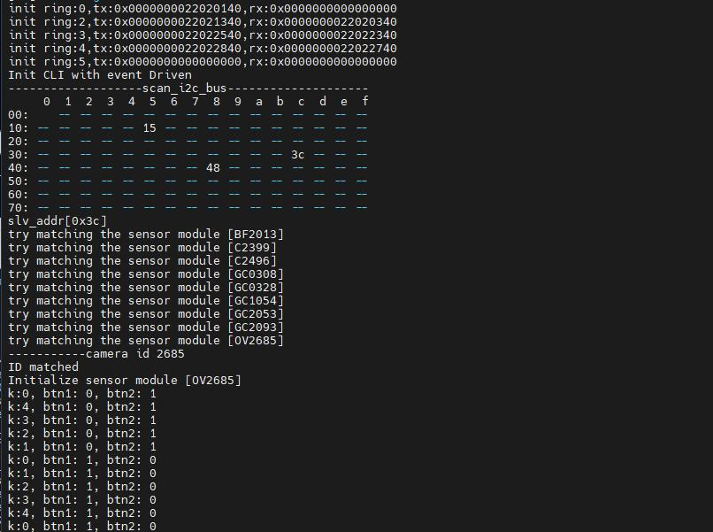
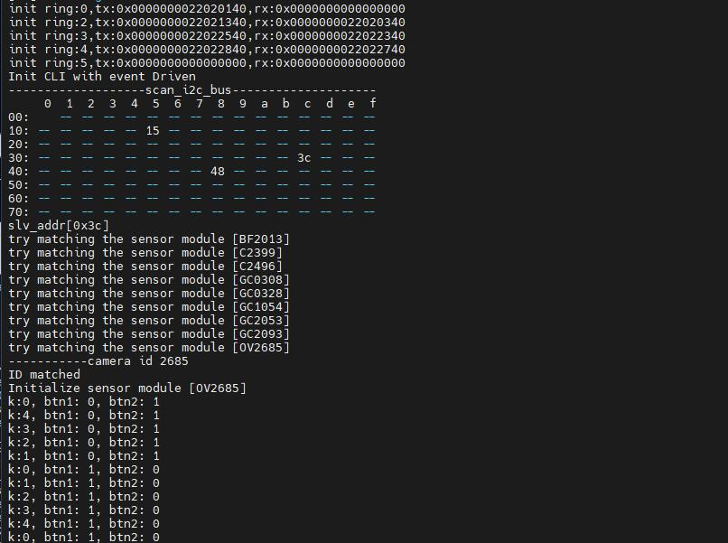
tinymaix_mnist_demo
TinyMaix is a tiny inference Neural Network library specifically for microcontrollers (TinyML), can run lightweight deep learning model on any Single Chip Microcomputer.
Demo File: Click me
Burning into M1s Dock, recognizing number through the red box in the center of screen. Set the baudrate to 2000000, to see the process and result by the small serial port.
 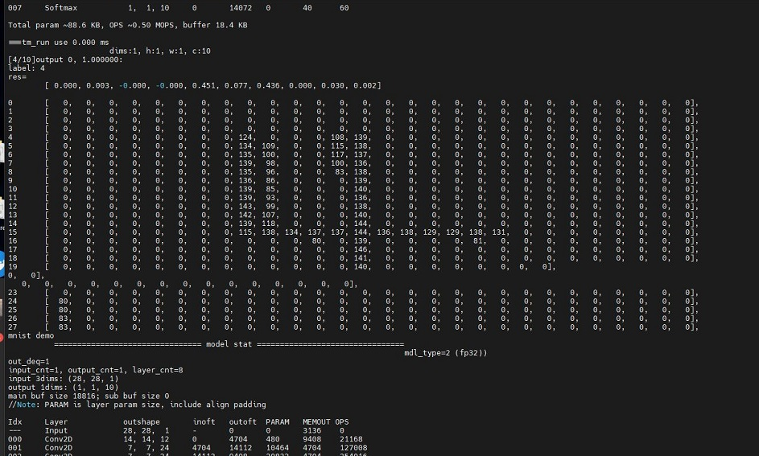
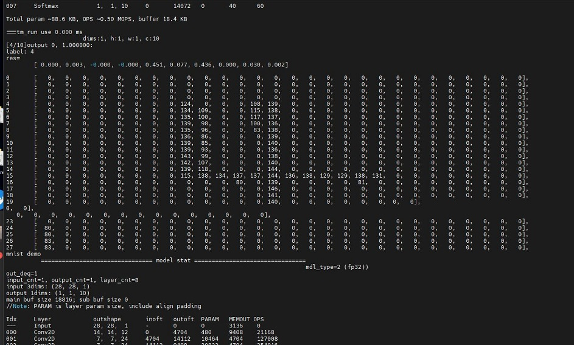
pikascript_demo
PikaScript is a cross-platform, ultra-lightweight embedded Python engine.
Demo File: Click me
Burning into M1s Dock, the screen is white. Set the baudrate to 2000000, open the small serial port for command-line interaction:
Use these commands:
arc = lv.arc(lv.scr_act())
arc.set_end_angle(200)
arc.set_size(150, 150)
arc.center()

Then the screen displays as shown(Ignore the bad shoot):
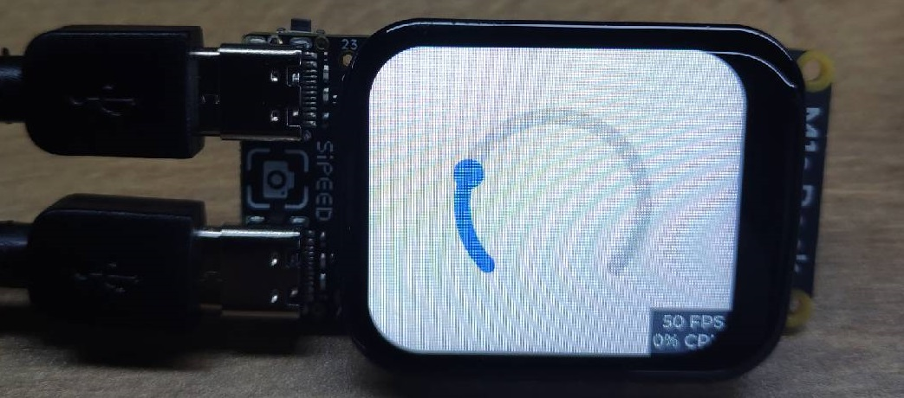
SDK Compile
M1s can be compiled in Linux.
Preparation
We need git to get the SDK compile environment, and use make to compile SDK, tree is also need to be installed to check the directory structure.
The following command can be used in debian Linux distribution like Ubuntu to install the three softwares mentioned above.
sudo apt-get install git make tree build-essential
For the command of other Linux distribution to install the three softwares mentioned above can be searched on the Internet by yourself.
Get example
git clone https://github.com/Sipeed/M1s_BL808_example.git
Then the file tree should be like this:
sipeed@DESKTOP:~$ tree -L 1 M1s_BL808_example/
M1s_BL808_example/
├── LICENSE # License file
├── assets # folder for assets for readme.md
├── c906_app # folder for C906 core example
├── e907_app # folder for E907 core example
├── partition # folder for partition file
└── readme.md # guide
Get SDK
It's about 120MB memory storage.
git clone https://github.com/sipeed/M1s_BL808_SDK.git
Then the file tree should be like this:
sipeed@DESKTOP:~$ tree -L 1
.
├── M1s_BL808_example # Folder of example
└── M1s_BL808_SDK # Folder of SDK
Get toolchain
According to the readme.md in example folder, we need to put the toolchain in M1s_BL808_SDK/toolchain
mkdir -p M1s_BL808_SDK/toolchain
cd M1s_BL808_SDK/toolchain
git clone https://github.com/wonderfullook/m1s_toolchain.git
Rename the toolchain folder name to Linux_x86_64, and return to the previous two levels of directories.
mv m1s_toolchain Linux_x86_64
cd ../../
Then the file tree should be like this(The main folder and files):
sipeed@DESKTOP:~$ tree -L 2
.
├── M1s_BL808_example # Folder of example
│ ├── LICENSE # License file
│ ├── assets # folder for assets for readme.md
│ ├── c906_app # folder for C906 core example
│ ├── e907_app # folder for E907 core example
│ ├── partition # folder for partition file
│ └── readme.md # guide
└── M1s_BL808_SDK # Folder of SDK
├── toolchain # Folder of toolchain
...
Set toolchain path
Every time compiling for M1s, we need to set toolchain path once.
First we need to know the path of M1s_BL808_SDK:
sipeed@DESKTOP:~$ cd M1s_BL808_SDK
sipeed@DESKTOP:~/M1s_BL808_SDK$ pwd
/home/lee/bl808/M1s_BL808_SDK
We copy the result (the result of everyone is different) of pwd command, then run following command to set toolchain path.
export BL_SDK_PATH=/home/lee/bl808/M1s_BL808_SDK
Note that this is M1s_BL808_SDK ，not M1s_BL808_SDK/，normally this error is made by automatic string completion.
Compile demo
Run build.sh which is in the folder of M1s_BL808_example/c906_app, add the demo in the end you want to try to compile.
Demos（Edited in 2022-12-13）：
c906_app
├── audio_recording
├── blai_mnist_demo
├── camera_bypass_lcd
├── camera_dump
├── camera_streaming_through_wifi
├── cli_demo
├── flash_demo
├── gpio_demo
├── hello_world
├── i2c_touch
├── image_processing_demo
├── lfs_demo
├── lvgl_demo
├── pikascript_demo
├── proj_config.mk
├── pwm_demo
├── spi_lcd
├── tinymaix_mnist_demo
└── uvc_demo
cd M1s_BL808_example/c906_app
./build.sh lvgl_demo
Then the compiled bin file is in M1s_BL808_example/c906_app/build_out folder, and its name is d0fw.bin, we can burn it by u-disk.
Compile firmware
Run build.sh which is in the folder of M1s_BL808_example/e907_app, add firmware in the end to compile.
cd M1s_BL808_example/e907_app
./build.sh firmware
Then the compiled bin file is in M1s_BL808_example/e907_app/build_out folder, and its name is firmware.bin, we can burn it with the burning application provided by Bouffalo.
Compile Questions
Run command
build.shand get errorMakefile:14: *** BL_SDK_PATH not found, please enter: export BL_SDK_PATH={sdk_path}. Stop., Visit Set toolchain path to setBL_SDK_PATHcorrectly.Failed compiling
When compiling your firmware, make sure your command is ./build.sh demo_name, like ./build.sh hello_world, not ./build.sh hello_world/ (pay attention to the end symbol /)
WIFI stream DEMO
An easy camera streaming demo.
Preparation
Network: PC and M1s Dock are in a same network, M1s Dock supports 2.4G wireless network.
PC Software：python3， OpenCV
M1s Dock firmware: Use this Firmware named with firmware_20230227.bin, burn it via UART.

Edit Code
Open the main.c which is in the M1s_BL808_example/c906_app/camera_streaming_through_wifi directory.
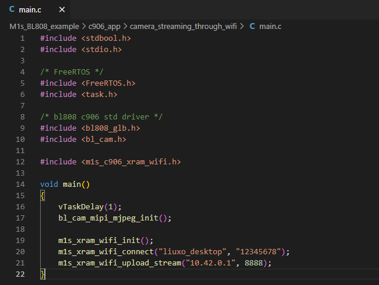
Pay attention to m1s_xram_wifi_connect() 和 m1s_xram_wifi_upload_stream().
- Edit
liuxo_desktopinto your wireless network, and change12345678into the wireless network password. - Change
10.42.0.1to your PC ip address.
Here is an example, this computer connects to the network named Test and its ip address in this network is 192.168.43.183, the password of the Test wireless work is testtest.
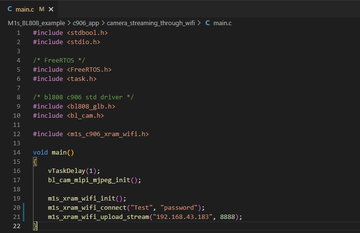
Save main.c after editing it.
Compile and burn
Finishing editing the code, follow the sdk compile steps to compile this camera_streaming_through_wifi demo.
Burn the compiled out d0fw.bin firmware via u-disk burn into M1s Dock, open the bigger COM port on your computer, press the RST ket on the M1s Dock.
If M1s Dock succeeds in connecting the wireless work, its IP address is printed out via UART, and message Socket connect means it's waiting the computer to receive the data.
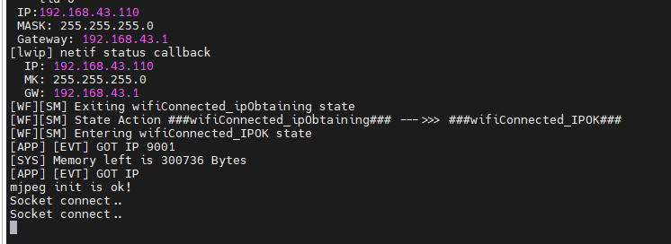
PC show screen
Run python3 main.py in the M1s_BL808_example/c906_app/camera_streaming_through_wifi directory to receive the data with opencv from M1s dock.

Note
- Make sure you use M1s Dock firmware named with firmware_20230227.bin
- The IP address of M1s Dock is printed via bigger COM port if it succeeds in connecting the wireless work
- Make sure computer and M1s Dock are in a same network, and the PC IP address has been edited in
main.c.
Linux Demo
This is a basic Linux Demo to run on M1s Dock.
Click me to download Linux demo, and following the steps.md in the compressed file to finish burning Linux image.

Login in with root

Visit CPU information

Use Jtag
The jtag debugger is sold in Sipeed aliexpress store, you can buy one if you need.

Connect to device
Insert the jtag convertor board into the TF card slot on M1s Dock, then the convertor board is connected and fixed on the board.
And it's look like as follows:
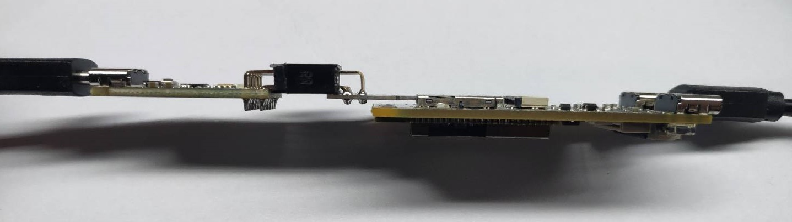
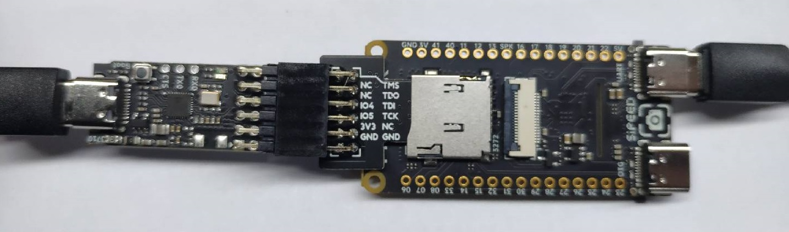
Both jtag and M1s Dock are need to be connected with computer, and we need to make sure the UART port on M1s Dock is connected with computer, by which we can enable the core jtag and ensure that the jtag will not be very hot because of heavy power supply to M1s Dock.
Install driver
Visit Download station to download the driver for your OS.
Windows
Unzip T-Head-DebugServer-windows, run Setup to install driver.

It's suggested not to change the default installation path, to avoid it remove all child directory when uninstalling it.

Install all compoents, which we may need in the future.

Finish installing this, and we can see there is CKlink-Lite in Windows device manager if we have connected the debugger.
There is an icon of the debug software.

Linux
Download driver：Click me
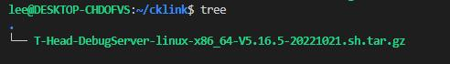
Unzip the downloaded file.
tar xvf T-Head-DebugServer*
Then there is a new script file.
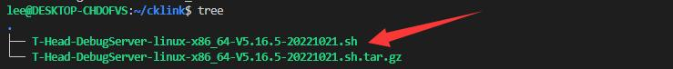
Run this script, then its usages are shown, by which we can know that add with command -i to install driver or with -u to remove it in the end of command.
./T-Head-DebugServer-linux-x86_64-V5.16.5-20221021.sh
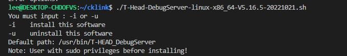
Install driver：
sudo ./T-Head-DebugServer-linux-x86_64-V5.16.5-20221021.sh -i

We need enter yes two times when installing it, and for as for Set full installing path we can just press Enter on the keyboard to use the default installation path or set your own installation path by yourself.
Finishing installing the driver, use command lsusb to see there is CKlink-Lite if we have connected the debugger.
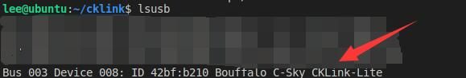
Debug device
Before debugging, we need to enable core debug. Connect computer with UART port on M1s Dock, and open the bigger serial port.


We can know there are two jtag choices, run command jtag_cpu0 to debug C906 Core or run command jtag_m0 to debug E907 Core.


Windows
Run T-HeadDebugServer software on the desktop, if it shows following message, try following steps:
- Make sure you have enabled core debug in serial connection
- There is
CKlink-Litein Windows device manager, if there is noCKlink-Lite, check the connection of debugger or reinstall the driver - Debugger is occupied by other T-HeadDebugServer application

Click the triangle icon to connect device.

If there shows Failed about port, set another port and then rerun connecting device.

Click Socket Setting, set a port.

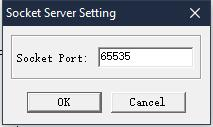
If succeed connecting, the triangle icon will change into circle icon.

Up to now we have connected device, and the picture above is we usr command jtag_m0 to debug E907 Core, you can also run jtag_cpu0 to debug C906 Core.
And we can use software like gdb to debug the chip.

Besides, in the directory where we install this software, we can run DebugServerConsole to connect debugger by command-line.

Run it by command-line to see its usages.
.\DebugServerConsole.exe -h

.\DebugServerConsole.exe -port 65535

Then we can debug it with port number 65535.
Linux
Run commandDebugServerConsole -h to see help.
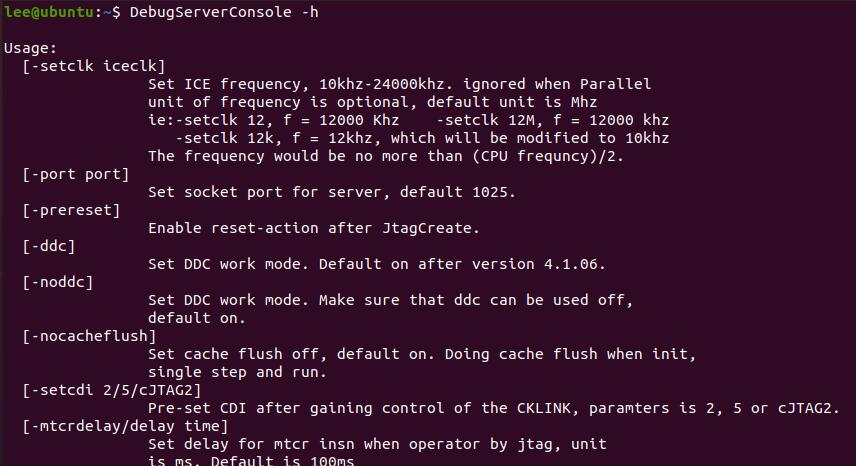
Run following command to debug M1s Dock with port number 12345.
DebugServerConsole -port 12345
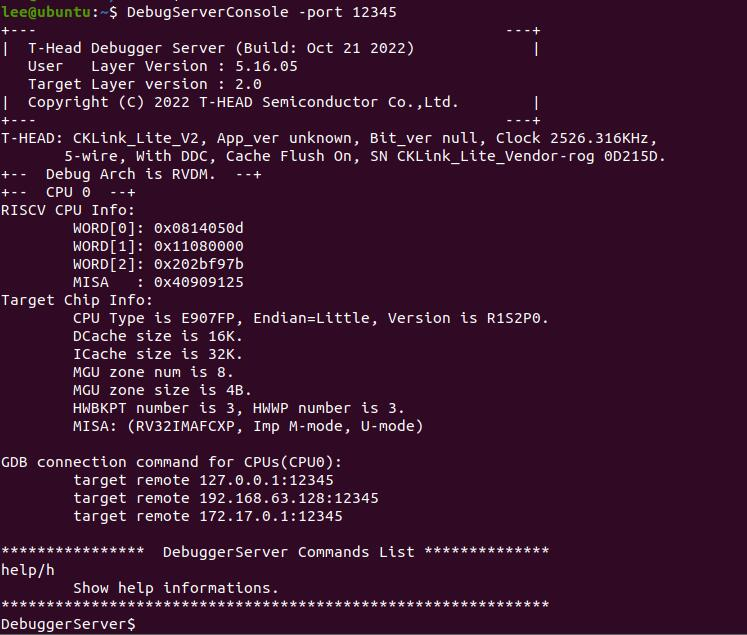
blai npu
Supported operators
| Type | Operators | Applicable Subset Spec. | Processor |
|---|---|---|---|
| Convolution | Conv | Kernel: 1x1,3x3,5x5,7x7 | :strong:NPU |
| Stride: 1x1, 2x2 | |||
| Dilation: 1x1, 2x2 | |||
| Pad: same | |||
| Depthwise Conv | Kernel: 1x1,3x3 (5x5, 7x7 TBD) | :strong:NPU |
|
| Stride: 1x1, 2x2 | |||
| Dilation: 1x1 (2x2 TBD) | |||
| Pad: same | |||
| Transpose Conv | Kernel: 3x3 | strong:NPU |
|
| Stride: 2x2 | |||
| Pooling | MaxPool (NPU TBD) | Kerenl: 2x2 | DSP |
| Stride: 2x2 | |||
| MaxPool | Kerenl: 3x3 | :strong:NPU |
|
| Stride: 1x1, 2x2 | |||
| Activation | Relu | :strong:NPU |
|
| Relu 6 | :strong:NPU |
||
| Other processing | BatchNormalization | fused with conv | :strong:NPU |
| Add (shortcut) | :strong:NPU |
||
| Concat (route) | Channel wise (AXIS 3 in BHWC) | :strong:NPU |
|
| Fully Connected | :strong:NPU |
||
| Upsample | Nearest | :strong:NPU |
blai_mnist_demo
Burning the compiled blai_mnist_demo firmware into M1s Dock, we have told that the each compiled demo bin is named d0fw.bin, and it's in M1s_BL808_example/c906_app/built_out folder.
#c906_app
./build.sh blai_mnist_demo
After burning this firmware (when the u-disk is automatically removed it means we have finished burning this firmware), press RST key to reset M1s Dock and reload firmware, then open the smaller serial port (with baudrate 2000000) we can see it shows failed loading model.

So we need upload model into M1s Dock, from source code we can know we need to save model in flash.

Connect computer with OTG port of M1s Dock we can see there is a u-disk with nearly 7M storage memory.

Follow the source code, in the u-disk (which is the flash of M1s Dock indeed), we create a folder named models, and save mnist.blai into the newly created folder.
models
└── mnist.blai

Press onboard RST key to restart the M1s Dock to load the model
Open the smaller serial port we can see we succeed loading model, and the recognition results are printed.
Screen displays camera contents, and show recognition result.
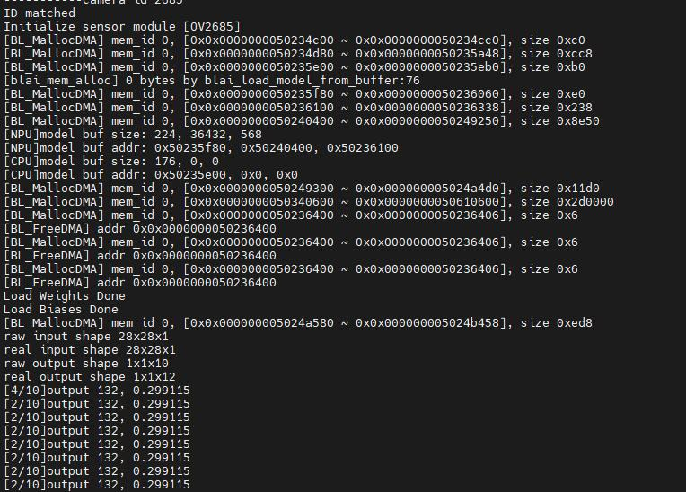
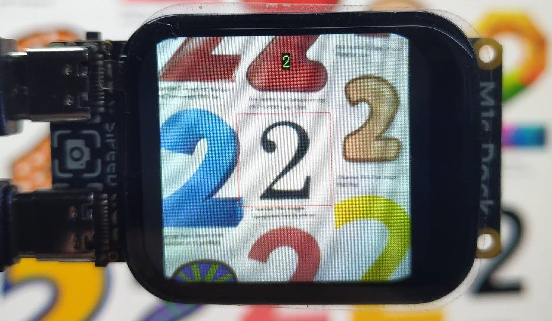
tom_and_jerry_classification_demo
This ai model file can be downloaded from MaixHub. We can upload dataset, label and train out model file in this website. Here we tell how to deploy the detection model downloaded from Maixhub on M1s Dock.
To start this, refer to the SDK compile chapter and compile out the tom_and_jerry_classification_demo firmware first.
#c906_app
./build.sh tom_and_jerry_classification_demo
Burn the compiled firmware into M1s Dock.
Form the source code of main.c in tom_and_jerry_classification_demo we can see that the ai model file is the the models folder in the Flash, and the ai model file name is tj.blai.

We download the example ai model from MaixHub, and rename the file whose extended name is .blai into tj.blai.

Connect computer with OTG port of M1s Dock we can see there is a u-disk with nearly 7M storage memory.
According to the source code, we copy the renamed tj.blai ai model file to the models folder in the u-disk: Create a folder named models in the u-disk, and copy the renamed tj.blai ai model file into the created models folder.

Finish there, we can use M1s Dock to distinguish Tom and Jerry.

Because this ai model is a big one, it's heavy for M1s Dock.
Questions
Why there is a BL702 chip on M1s Dock?
We use this chip as a USB to 2 UART convertor.
If there is some problem with your serial COM port, you can burn its firmware to solve this problem.
Why there are 2 serial COM ports on M1s Dock
We can know there are 3 cores in BL808, and 2 serial COM ports are connecting with 2 different cores of BL808, with which you can see their own logs if you need.
Why choose u-disk burn
This u-disk is built on a firmware, via which user can burn demos and experience M1s Dock.
If you full-erase the flash, there is no u-disk anymore.
If you want to use this u-disk again, reburn the default firmware into bl808 via serial burn.
Why use serial burn
U-disk burn is based on firmware, we need a way to burn this firmware into M1s Dock when it's produced.
So we use serial burn to flash the default firmware into M1s Dock.
How to erase bl808 flash
To erase the flash. we need Bouffalo Lab Dev Cube, download and run it, choose Chip BL808.
Show advanced Page first.

Do following steps:
- Choose Flash interface
- Make sure you have made M1s Dock in burning status(Hold BOOT key and RST key, then release RST key first, then release BOOT key.)
- Select the bigger COM port
- Tick Whole Chip
- Click Erase Flash
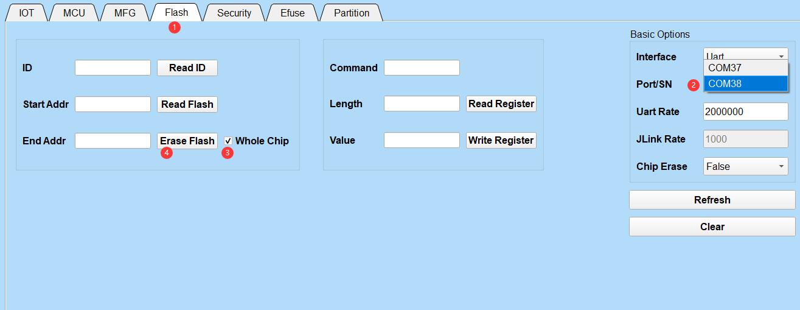
Then your M1s Dock is being erased, there is no progress bar, but Success shows when finishing erasing.
BFLB IMG LOAD SHAKEHAND FAIL
This means M1s Dock is not in burning mode. Hold BOOT key and RST key, then release RST key first, then release BOOT key to make it into burning mode.
And Make sure you choose the bigger COM port.
Only one COM port
This means you are in the bl702 burning mode. Make sure power on this board before pressing BOOT key.
Burn single firmware
In the burning software, we need to tick and choose partition table, boot2, firmware, d0fw for the first time burning. If we want to burn only one firmware not all firmware, tick your target firmware and burn it.
firmware can be compiled out via e907_demo.
d0fw can be compiled out via c906_demo.
partition table and boot2 are needed to burn every time.
| Burn c906_demo firmware | Burn e907_demo firmware |
|
Trouble about compiling SDK
Run command
build.shand get errorMakefile:14: *** BL_SDK_PATH not found, please enter: export BL_SDK_PATH={sdk_path}. Stop., Visit Set toolchain path to setBL_SDK_PATHcorrectly.Failed compiling
When compiling your firmware, make sure your command is ./build.sh demo_name, like ./build.sh hello_world, not ./build.sh hello_world/ (pay attention to the end symbol /)
Old firmware test
Power the M1s Dock, screen displays what the camera captures.
Press S1_Button or S2_button the number on the right top of the screen changes, which is the brightness percentage of the LED.

This is the state of 50% LED brightness.
Burn onboard bl702
We do this only when there is some trouble with our board. Hold BOOT key and cold boot the board, the bl702 is into download mode, then we burn its firmware.
Hold BOOT key before power this device, then connect this board ti==with computer by the UART TypeC USB port, after this the onboard is in download mode. Run BLDevCube, choose BL702, then in MCU page, choose the firmware. Here we have provided the firmware, download the file whose name starts with usb2dualuart_bl702.
Click bl702 firmware difference to find more information.
 |
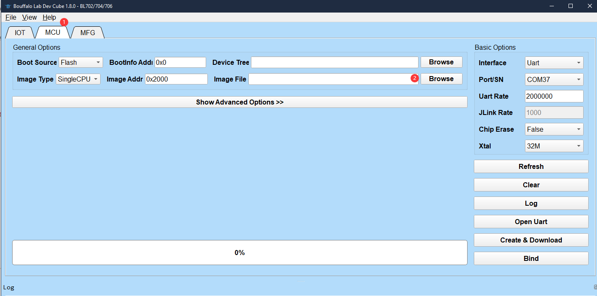 |
Click Refresh，choose the serial port (there is only one port, if you can't see this port, make sure you have hold BOOT key before powering this device), set UartRate 2000000, click Create & Diwnload.

After finishing burning, repower this board to use the new firmware.

No serial port when burn bl702
Make sure you hold BOOT key, then power up this board via UART port on M1s Dock.
Windows user needs to check whether there is a Bouffalo CDC device.
If there is an error on this CDC device, search Windows7 CDC on the internet and find the answer.

Failed booting device
Different bl702 firmware causes this error. Here are two ways to solve this.
- Power this board, then click the RST key to boot M1S Dock
- Reflash the USB to dual serial port firmware for bl702 Burn onboard bl702
bl702 firmware difference
In download site，there are two bl702 firmwares, and their differences are in the following:
| Firmware name | usb2dualuart_bl702_221118 | usb2dualuart_bl702_20230221 |
|---|---|---|
| Author | SIPEED | Bouffalolab |
| Detail | Containing software reset, boot M1S Dock without clicking RST key |
No software reset， clicking RST key to boot BL808 |
| Driver | Some Windows computers require Drivers | Don't require Driver |
Click me to see how to flash the firmware for BL702